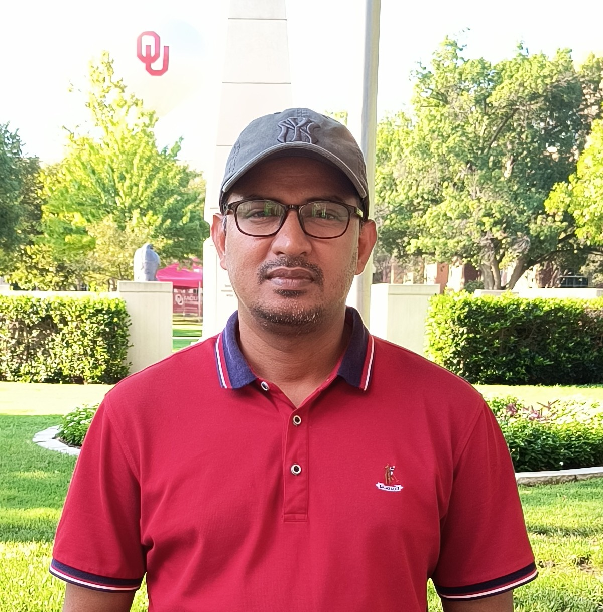

Welcome!
I am a Ph.D. student in Economics at the University of Oklahoma. My research interests include development economics, energy economics, and industrial organization.
This website will include my research, teaching, and CV.